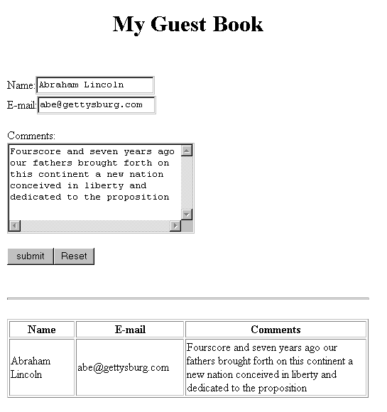

Table of Contents
Table of Contents  Next Section
Table of Contents
Next Section
Table of Contents  Previous Section
Previous Section
You'll create the Guest object in the constructor method for your component. This method is called when the component is first created; that is, the first time the user accesses the component.
Note: In WebScript or Objective-C, you use a method called init for this purpose.
Project Builder becomes active and displays the code for Main.java. Notice the following declaration that was added to your code when you added the currentGuest variable:
protected Guest currentGuest;
Main() {
super();
currentGuest = new Guest();
}
The first statement calls the constructor of Main's superclass (which is com.apple.yellow.webobjects.WOComponent). The second statement allocates a new empty Guest object and calls Guest's constructor to initialize its instance variables.
The application should work similarly to the first chapter, except that the guest's data is displayed in a table at the bottom of the page instead of as plain text.

Table of Contents Next Section